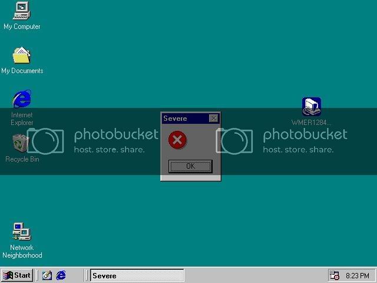

I don’t get it. also what does this have to do with Windows 98?
and possibly missing it?
The fact that AoE was pretty much THE historical RTS for Win98? Did you actually play ANY games on the OS?
I played Worms Armageddon. That is what I can remember at least.
so if its some AoE joke, then I don’t care. Never played that game.
The old man is a Priest, they convert enemy units, and it is really hella damn funny.
BMS is already running on an outdated engine (6 years is quite old enough. The 2007 update pushed it up to 2007 standard. It’s 2010), so it’s perfectly fine?
I used play Midtown Madness 2 as well. Finished that shit like 5 times. The london taxi driver’s course was freaking hard later on. I wish they’d have brought number 3 out on PC.

Oh, Windows 98, you crazy fucker.
Severe X? That can’t be good!
loel internet explo0rer
my fav game as a kid was playing lemmings in DOS, i still have my first computer, a Datel 386 with a 486 upgrade, the type that sits on the desk with the monitor on top, had a awesome like 14" shamrock screen… win 98 i played alot of CS and Dark Colony, good times
Apparently it was nothing important (I was installing the graphics drivers), since I clicked OK and it then asked if I wished to continue, I said Yes, and it went on its merry way.
I grabbed and old flash drive that I haven’t used in 2 or more years only to find win95 on it complete with hover and the old maze screen saver about a month ago. I had a brief moment of nostalgic excitement.
This thread brings back memories. I remember the first computer my pa got when I was a young’un it had a Cyrix 386 chip a 40MB HDD, 2MB of ram (later upgraded to 4MB) with 5.25" and 3.5" floppy drives.
Then we got a 95b machine, which was supposed to have limited USB support, but didn’t, upgraded that to 98 for USBage.
Would I go back? Not on your life, sure it was a simpler time, when you could know what every file extension did, but it was crap, I like windows peek too much.
By the way, does anyone remember Kye or Stargoose? There’s another one I’m thinking of too but I can’t remember the bloody name.
What a beast!! How well did it run Crysis?
Well, it’s also to do with the way the OS handles “free access to system files”, as you put it. I’ve been running Linux of various flavours, but mainly Ubuntu, since about May 2006 and I’ve had far less issues than I ever did with Windows. Generally if you want to break stuff you have to be pretty focused on doing it - it isn’t as much that you’re “smarter” as much as its less likely to randomly break itself because you dragged something to the wrong place or shut down incorrectly.
Releases I’ve run without a hitch:
6.06
7.04
7.10
8.04
8.10
9.04
9.10
10.04
6.10 was evil and ended up killing my 6.06 install when I tried to upgrade to it, so… yeah. 6.10 can fucking die in a fire. Besides that Linux has been pretty good to me.
FUCK! You guys just reminded me of my Cyrix chip, with 16MB of ram! That bad boy booted windows 95 and would crash if you dared to click the start button whilst the machine was still booting.
Now i don’t mean it crashes and then recovers a few minutes later, it used to freeze and needed a hard reboot haha. Also, on my 3.1 machine i has this game:
Thats right. Red Baron!
Those huge Red letters sure don’t look like they belong to a Baron.
Windows 98 has really good security. If you feel your computer isn’t secure enough while it’s running, you simply press the power button and you are practically immune to viruses and people gaining remote access to your computer. Unless you are refering to the security provided by DOS. Afterall, DOS is based on UNIX and redesigned into a simpler form for the average PC user. They stripped out all the complicated features like all the secuirty features… Oh, wait. That’s right. They threw out the concept of all the security features of UNIX when they were designing DOS. I guess the power button is your best bet.
On a side note, I used to look for people inadvertantly sharing their printer over the internet and print “Feed me paper” on their printer over and over again for several pages so I could show them that they had file and printer sharing enabled over the internet and that their computer was wide open.
I guess it works out since Windows has always loved restarting.
no, just no